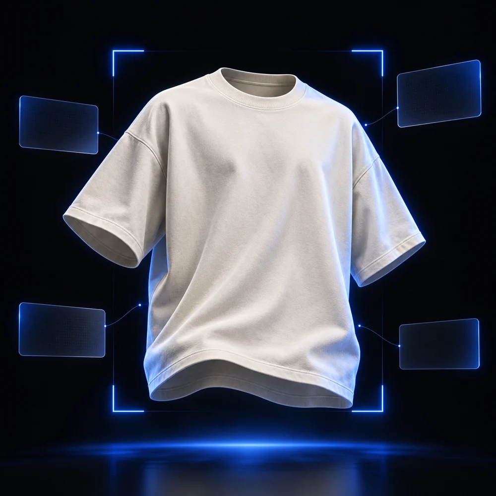
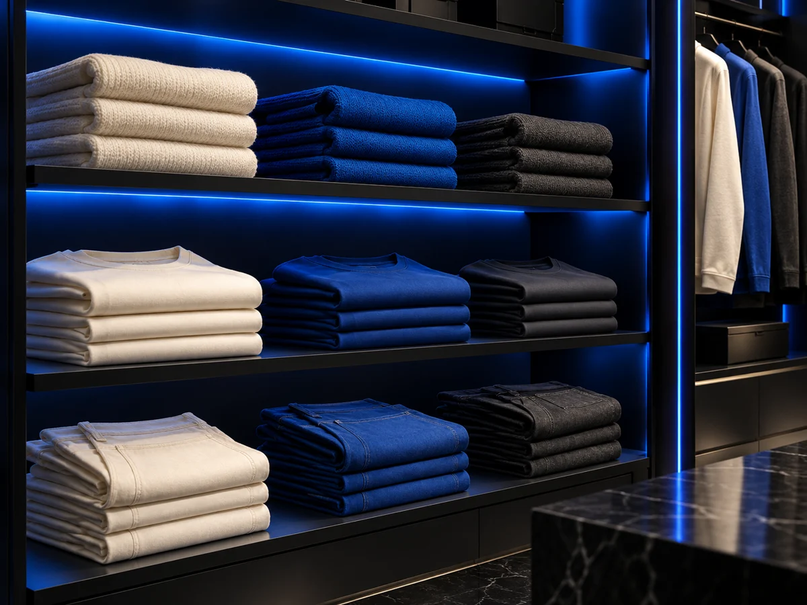

Fotografía
Captura la prenda completa con buena iluminación y un fondo sencillo.
EL PUNTO DE PARTIDADe una fotografía a un catálogo organizado. Closer propone una forma más simple de identificar y clasificar vestuario con inteligencia artificial.

Menos tareas repetitivas.
Más orden en tu inventario.
Más tiempo para tu negocio.
Autocatálogo IA combina Machine Learning y visión artificial para reconocer prendas a partir de fotografías. Estas son las funciones contempladas en la propuesta.
Explora cada tarjeta con el cursor, un toque o el teclado. Las funciones describen el concepto del proyecto y están sujetas a desarrollo y validación.
Un flujo pensado para reducir el trabajo manual de clasificar y registrar prendas, conservando la revisión de la persona que gestiona el inventario.
Captura la prenda completa con buena iluminación y un fondo sencillo.
EL PUNTO DE PARTIDAEl sistema propuesto analiza la imagen y sugiere una categoría para la prenda.
EL APOYO DE LA IAComprueba la sugerencia y organiza la ficha de la prenda dentro del catálogo.
TU CRITERIO, SIEMPRE PRESENTEElige una prenda de ejemplo y descubre cómo podría verse una ficha de catálogo. Simulación interactiva con resultados predefinidos; no ejecuta un modelo de IA.
Selecciona una fotografía y pulsa «Simular clasificación» para visualizar un resultado ilustrativo.
Clasificación ilustrativa · pendiente de tu revisión
Las imágenes son generadas. No se suben fotografías ni se guarda un inventario real.
Una propuesta para facilitar la organización de prendas y la preparación de su catálogo.
Una forma de explorar la automatización de tareas repetitivas en la identificación de ropa.
Un concepto para quienes buscan dedicar menos tiempo al registro manual de productos.

Closer es una propuesta desarrollada para un trabajo universitario en Concepción, Región del Biobío, Chile.
Con Autocatálogo IA buscamos automatizar la identificación, clasificación y catalogación de prendas mediante inteligencia artificial, reduciendo el tiempo de trabajo manual y mejorando la eficiencia en la gestión de inventarios.
El siguiente paso del proyecto es desarrollar y evaluar el modelo con fotografías de prendas, distintas condiciones de iluminación y ejemplos nuevos.
Es la propuesta de una aplicación que utiliza Machine Learning y visión artificial para reconocer y clasificar prendas a partir de fotografías, apoyando la creación de un catálogo.
No. La demo representa la experiencia de uso con imágenes y resultados predefinidos. El modelo de reconocimiento no está conectado a esta página.
La propuesta contempla que la persona pueda revisar la sugerencia antes de confirmar la ficha. La iluminación, el fondo y la calidad de la fotografía pueden influir en un futuro modelo.
Esta es una presentación académica. No se han definido planes comerciales ni se presentan clientes, testimonios o métricas de rendimiento validadas.
Explora la propuesta de Closer y descubre la experiencia de Autocatálogo IA.
Volver a la demostración